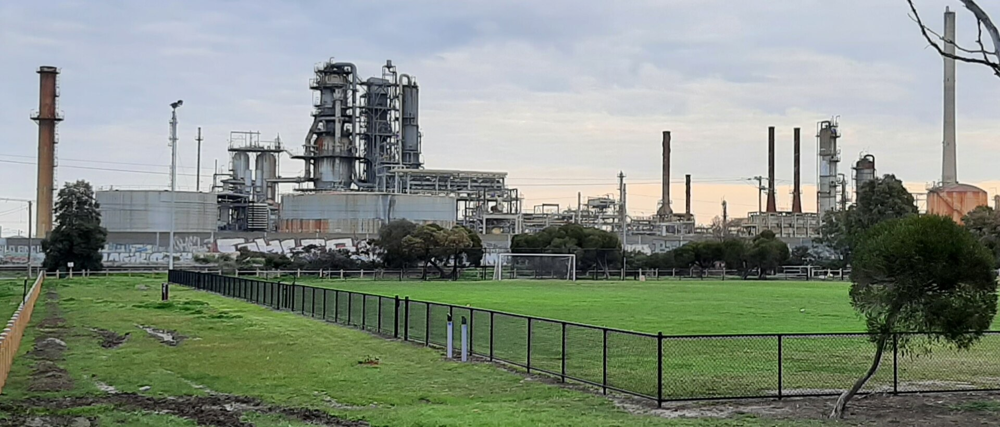

Trump strikes diesel deal with Putin: Russia to supply the US with 300,000 tonnes of fuel
US President Donald Trump announced Russia will immediately supply 300,000 tonnes of diesel — effectively reversing sanctions he signed a month earlier. Ukraine's President Volodymyr Zelensky called it a 'gift to Putin'.

US President Donald Trump announced on 9 October 2026 that Russia had agreed to immediately supply 300,000 tonnes of diesel to the American and global markets, with another 500,000 tonnes in November. The decision followed a phone call with Russian President Vladimir Putin.
The deal effectively reverses a sweeping sanctions law on Russian energy exports that Trump himself signed roughly a month earlier. The US Treasury immediately issued a temporary general license permitting the flow of Russian diesel.
The reason — fuel prices
Trump framed the move as a way to lower fuel prices for Americans. According to France 24, the national average price of diesel in the US had peaked at $6.52 per gallon on 22 September, standing at $6.23 by Friday. The decision comes ahead of the November US midterm elections.
Zelensky's criticism
Ukrainian President Volodymyr Zelensky sharply condemned the deal: 'Gifts to Putin will not bring peace or any benefit to the civilized world. Allowing Russia to sell petroleum products is an investment in a war that must be ended, not prolonged.'
Peace talks
Separately, US, Ukrainian and European negotiators held 'constructive discussions' in Miami on a joint plan to end the war. US Secretary of State Marco Rubio said 'we do not believe that there is a military solution to this conflict,' France 24 reported. Moscow's demand to control all of the eastern Donbas remains a key obstacle.